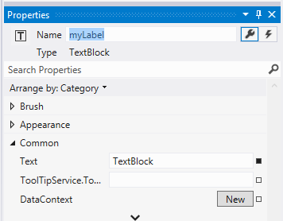
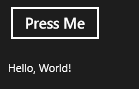

1、Windows开发环境
Visual Studio 2012随着 Windows 8 的发布，世界已经发生了显著的变化。 Visual Studio 2012 提供了新的模板、设计工具以及测试和调试工具——在尽可能短的时间内构建具有强大吸引力的应用程序所需要的一切。 同时，Blend for Visual Studio 还为您提供了一款可视化工具集，让您可以充分利用 Windows 8 全新而美观的界面。
不过，最有价值的地方在与创建应用程序之后。 以前，要想将一款客户需要的产品展现在客户面前并不总是一件容易的事情。 但是现在，通过 Windows Store 这一广泛的分布式渠道，您可以接触数百万的用户。 条款是透明且易于理解的。
2、Windows Phone模拟器
下图为wp8模拟器，提供了加速计、位置、屏幕截图和网络等模拟功能
2.1、系统要求
Windows Phone 8 模拟器 在 Hyper-V（Windows 8 的虚拟化技术）上运行一个虚拟机。要运行模拟器，您的计算机必须符合本主题中描述的运行 Hyper-V 的要求。
当您安装 SDK 时，安装程序会尝试无提示配置这些必备组件。安装程序成功配置必备组件之后，模拟器即可按预期工作。否则，您可能需要手动启用这些必备组件。如果您必须手动配置必备组件，请参阅如何为 Windows Phone 模拟器启用 Hyper-V中介绍的步骤和工具。
您的计算机必须满足以下要求：
- BIOS：在 BIOS 中，必须支持以下功能：
- 硬件辅助虚拟化。
- 二级地址转换 (SLAT)。
- 基于硬件的数据执行保护 (DEP)。
- RAM：4 GB 或更大。
- 操作系统：
- Windows8
- 64 位
- Pro 版或更高版本
您的网络必须满足以下要求：
- DHCP。模拟器需要 DHCP，因为它会将自身配置为网络上的一个单独设备，并使用自己的 IP 地址。
- 自动配置的 DNS 和网关设置。模拟器的 DNS 和网络设置无法手动配置。
2.2、如何为模拟器启动Hyper V
当您安装 SDK 时，安装程序会尝试无提示配置这些必备组件。安装程序成功配置必备组件之后，模拟器即可按预期工作。否则，您可能需要手动启用这些必备组件。
您必须启用或禁用特定 BIOS 选项有所不同，部分取决于硬件制造商。
- 重新启动计算机，并按下所需的键以进入 BIOS 设置。
通过在计算机启动期间按下特定的键，可以查看并更改计算机的 BIOS 设置。需要按下的键取决于制造商。一般是 <Del> 之类的特殊键，或者是 <F2> 或 <F10> 之类的功能键。
- 启用以下项目（如果可用）：
|
功能 |
AMD 设置 |
Intel 设置 |
|
SLAT（二级地址转换） |
NP（嵌套页表） RVI（快速虚拟化索引） |
EPT（扩展页表） |
|
硬件辅助虚拟化 |
SVM（硬件辅助虚拟化的 AMD 支持） |
VMX（硬件辅助虚拟化的 Intel 支持） |
|
数据执行保护 (DEP) |
NX（不执行） |
XD（执行禁用） |
- 禁用以下项目（如果可用）：
- Intel VT-d
- 可信执行
- 保存设置，并再次重新启动计算机。
- 接下来，在 Windows 中启用 Hyper-V。
在 Windows 中启用 Hyper-V 的步骤
1. 在“控制面板”中单击“程序”，然后单击“开启或关闭 Windows 功能”。
2. 在“Windows 功能”对话框中，单击“Hyper-V”。将展开选项列表。
3. 在展开的选项列表中至少选择“Hyper-V 平台”复选框，然后单击“确定”。
2.3、在Windows Phone模拟器中调整缩放设置
可以在主机屏幕上更改模拟器的大小。模拟器的每英寸点数 (DPI) 以主机监视器 DPI 为基础，无论缩放值如何。缩放功能允许您在主机屏幕上将 Windows Phone 模拟器的大小设置为所需的百分比。100% 的缩放设置表示模拟器的最大分辨率。
在模拟器工具栏中，单击“缩放”按钮。随即打开“缩放”对话框。在“缩放”对话框中，输入 33 到 100 之间的缩放值。这样即可调整模拟器的缩放。在模拟器工具栏中，单击“适于屏幕”按钮，即可将模拟器调整为最适合屏幕的大小。
2.4、在Windows Phone模拟器中使用计算机键盘
默认情况下，不启用硬件键盘。此实现等效于使用之前必须部署的滑动键盘。在您启用硬件键盘之前，模拟器只接受控制键的键输入。
模拟器不支持本地化版本的 Windows 开发计算机键盘上的特殊字符。要输入本地化键盘上的特殊字符，请使用软件输入面板 (SIP)。
按 PAGE UP 键或者按 PAUSE/BREAK 键即可切换物理键盘的开启与关闭。
下表列出了可用于模拟按钮的硬件键盘上的键以及 Windows Phone设备上的其他控件。
|
计算机硬件键盘 |
Windows Phone 硬件按钮 |
注释 |
|
F1 |
返回 |
长按可实现预期效果。 |
|
F2 |
开始 |
长按可实现预期效果。 |
|
F3 |
搜索 |
|
|
F4 |
不适用。 |
|
|
F5 |
不适用。 |
|
|
F6 |
半专用相机 |
半按专用相机按钮。 |
|
F7 |
专用相机 |
专用相机按钮。 |
|
F8 |
不适用。 |
|
|
F9 |
提高音量 |
|
|
F10 |
降低音量 |
|
|
F11 |
不适用。 |
|
|
F12 |
电源 |
长按可实现预期效果。 |
|
ESC |
返回 |
长按可实现预期效果。 |
|
Pause/Break |
切换键盘 |
切换硬件键盘。 |
|
PAGE UP |
键盘向上键 |
启用硬件键盘。 |
|
PAGE DOWN |
键盘向下键 |
禁用硬件键盘。 |
2.5、配置模拟器的Hyper V网络
1、无法连接Internet
Windows Phone 8 模拟器 使用主机中的 HTTP 代理设置。如果您无法自模拟器访问 Internet 资源，请与您的 IT 管理员联系，以确保您的代理设置将适用于模拟器。
如果您的网络的代理服务器不可用或发生故障，通过禁用主机上的自动代理检测可能可以恢复模拟器的连接。但是，这只在特定网络配置中有效。
2、无法连接域或者企业内部网络
Windows Phone 8 模拟器 将在网络上显示为单独的设备，并使用自己的 IP 地址。它未加入 Windows 域，并且不与主机共享域或工作组凭证。
如果您的网络要求基本网络和 Internet 连接具有域或工作组授权，请联系您的 IT 管理员以获取例外授权。此例外授权允许将您的开发计算机用作边界机器，并接受来自未加入域的网络设备（例如模拟器）的连接。
Windows Phone 8 模拟器 还使用其自身的 MAC 地址集。如果您无法自模拟器访问网络或 Internet 资源，请与您的 IT 管理员联系，以确保模拟器的 MAC 地址已经在您的网络上得到授权。
3、重新配置Hyper V虚拟适配器
1. 从 Windows 的“开始”屏幕中查找并运行“查看网络连接”，以便打开“网络连接”窗口。此选项出现在“设置”下面。
- 在“网络连接”窗口中右键单击名为 vEthernet (Internal Ethernet Port Windows Phone Emulator Internal Switch) 的适配器，然后选择“属性”。
- 在“属性”窗口中找到虚拟适配器使用的项目列表，确保仅选中了以下项目：其他所有项目均应取消选中。
- Microsoft 网络的客户端
- QoS Packet Scheduler
- Microsoft 网络的文件和打印机共享
- Microsoft LLDP 协议驱动程序
- 链接层拓扑发现映射器 I/O 驱动程序
- 链接层拓扑发现响应程序
- Internet 协议版本 6 (TCP/IPv6)
- Internet 协议版本 4 (TCP/IPv4)
- 如果您卸载并重新安装模拟器，或者安装其他联网软件或驱动程序，请重复这些步骤。
4、重新创建Hyper V虚拟交换机步骤
1. 运行 Hyper V-Manager。
- 在 Hyper-V Manager 的导航窗格中，选择您的开发计算机。
- 从“操作”窗格中运行“虚拟交换机管理器”。
- 在“虚拟交换机管理器”中，创建一个类型为 Internal 的新虚拟交换机。
- 在“虚拟交换机属性”窗口中命名新的虚拟交换机 Windows Phone Emulator Internal Switch，然后将其连接类型设置为“内部网络”。
- 单击“确定”关闭“虚拟交换机管理器”。您还可以关闭 Hyper-V 管理器。
3、 XCode VS VisualStudio 2012
3.1 Microsoft Visual Studio
现在让我们创建一个MyApp 项目，向您展示如何找到自己的 Microsoft Visual Studio 集成的开发环境 (IDE)。
Xcode 开发人员应该熟悉下面的图中的默认视图，左窗格中有源文件，在中心窗格中编辑ui和代码，右窗格中是属性的编辑器。
Microsoft Visual Studio类似，虽然默认视图中控件在工具箱的左侧。源代码文件是在解决方案资源管理器中，在窗口的右侧，且属性在属性窗口中也在右侧。布局如下图所示。

如果您希望您的源文件的左侧和右侧的控件，您可以重新排列在 Visual Studio 中的窗格。例如，要将工具箱中从屏幕的左侧移到右侧，按住工具箱窗格的标题栏、 开始拖动它，然后将其放在右侧放置目标，出现在屏幕上。Visual Studio 显示带阴影的框，让你知道后你掉在那里工具箱中将停靠位置。
若要使您的 IDE 看起来像上图，请执行此操作：
1、在解决方案资源管理器，请按住 MainPage.xaml 以打开它。
2、在左侧，点击工具箱以显示它。然后，在工具箱窗格标题栏中，点击图钉图标锁定它中，如下图, 所示。

3.2 添加的控件，设置它们的属性和响应事件
现在让我们添加一些控件到您的 MyApp 项目。然后，我们会更改某些控件的属性，并编写一些代码来响应控件的事件之一。
在 Xcode 中添加控件，你打开所需的.xib 文件，然后添加控件，比如一个倒圆角的矩形按钮和一个标签，如下图所示。在 Visual Studio 中，类似于.xib 文件.xaml 文件。
让我们在 Visual Studio 中类似的东西。在工具箱中，按住按钮控件，然后放到 MainPage.xaml 文件在设计图面上。做同样的 TextBlock 控件，如下图所示。
请注意与Xcode不同的是，隐藏的布局和内部.xib 文件，在 Visual Studio 中，绑定信息.xaml 文件显示这些详细信息丰富的声明性语言。有关可扩展应用程序标记语言 (XAML) 的更多信息，请参见 XAML 概述。在设计窗格中显示的所有事情是在 XAML 窗格中定义的。XAML 窗格允许更精细的控制，在必要时，当你学习有关它的详细信息，您可以更快地开发的代码。现在不过，让我们重点只是设计窗格和属性。
现在让我们更改该按钮的内容和名称。若要更改该按钮的内容在 Xcode中，需要在该按钮的属性窗格中，您更改的值标题框中，如下图所示
在 Visual Studio 中你做类似的事情。在设计窗格中，点击按钮，使其获得焦点。然后，若要更改该按钮的内容，在属性窗格中更改从"button"到"press me"的内容框中的值。下一步，若要更改该按钮的名称，如下图中所示更改从"< 没有名称 >"到"myButton"的名称框中的值
现在让我们来编写一些代码来更改 TextBlock 控件内容的"Hello，World!"后该用户点击按钮。
在 Xcode，会与控件关联的事件行为，所编写的代码，然后将该代码与该控件，类似于下面的代码和图相关联。
// Objective-C header.
-(IBAction) buttonPressed: (id) sender;
// Objective-C implementation.
-(IBAction) buttonPressed: (id) sender {
}
请注意在 Xcode中，你也可以将关联的事件代码与控件中，如下图所示。
Visual Studio 是相似的。在顶部右边的属性栏有一个闪电按钮。这是，并列出与所选控件关联的事件中，如下图所示。
在设计窗格中添加按钮的 click 事件的代码，双击Click右边的空格区域。Visual Studio 向单击框中添加文本"myButton_Click"然后添加并显示相应的事件处理程序，在 MainPage.xaml.cs 文件中，如下面的代码所示。
private void myButton_Click(object sender, RoutedEventArgs e)
{
}
现在，让我们更改 TextBlock 控件的名称。在 Xcode 中你会编写下面的代码和控件关联其定义中，如下图所示。
// Objective-C header. IBOutlet UILabel *myLabel;
请注意在 Xcode，您也可以将关联代码与它的定义中，如下图所示。

在 Visual Studio 中，您这样做，如，如下图所示：
1. 点击 MainPage.xaml 文件选项卡。
2. 在设计窗格中，点击 TextBlock 控件。
3. 在属性窗格中，点击扳手按钮以显示其属性。
4. 在名称框中，将"< 没有名字 >"改为"myLabel"。

现在让我们添加一些代码，到该按钮的 click 事件。若要执行此操作，请点击 MainPage.xaml.cs 文件，和 myButton_Click 事件处理程序中添加下面的代码。
private void myButton_Click(object sender, RoutedEventArgs e)
{
// Add the following line of code.
myLabel.Text = "Hello, World!";
}
前面的代码在XCode中会这么写：
-(IBAction) buttonPressed: (id) sender {
myLabel.text = @"Hello, World!";
}
最后，要在 Visual Studio 中运行应用程序，点击调试菜单上，然后点击启动调试 （或只是按 f5 键）。这款应用程序启动后，点击"按我"按钮和标签的内容从更改"文本块"到"Hello，World!"，如下图中所示的见。

若要退出应用程序，在 Visual Studio 中，点击调试菜单上，然后点击停止调试 （或只需按下 SHIFT + F5）。
4、 Eclipse VS VisualStudio 2012
4.1 创建工程
与Eclipse，被设计为一个通用的集成的开发环境 (IDE)，不同的是 Visual Studio 是针对Windows 应用商店应用程序而设计。
观看Eclipse与 Visual Studio 的比较的视频。
在本演练中，我们将向您介绍 Visual Studio 基础知识并比较它与 Eclipse 中的类似基础知识。每次创建一个应用程序，你就会按照步骤类似于这些。
为比较，为 Android 应用程序开发，启动 Eclipse 时你创建一个新项目通过点击File > New > Android Application Project，如下图所示。
在 Eclipse 中创建一个新的 Android 项目后，你可以选择的activity类型，如下图所示。
当您启动 Microsoft Visual Studio 时，您将看到开始页中，如下图所示。
若要创建一个新的应用程序，启动通过创建一个新的项目，通过执行下列操作：
1、在开始区域中，点击新的项目。
2、点击文件菜单，然后点击新项目。
3、有几个项目模板可供选择，如下图所示。
在 Visual Studio 中的 Windows 存储项目模板是类似于你安装 Android 开发人员工具 (ADT) 插件添加到 Eclipse 的 Android 应用程序项目模板。
在本演练中，点击 Visual C#，，然后点击空白 App (XAML)。在名称框中，键入"MyApp"，然后点击确定。Visual Studio 创建，然后显示您的第一个项目。现在你可以开始设计您的应用程序，并将代码添加到它。
在 Visual Studio 新项目对话框中的位置框是类似于由 Eclipse 使用的工作区。
与你在Android Eclipse中创建一个activity项目不同的是 Visual Studio 包括创建具有多个页面和这些页面之间的导航的应用程序的项目模板。空白应用程序模板，另一方面，创建一个只有一页应用程序。别担心，显 然 — — 我们也可以添加第二个页面和导航。